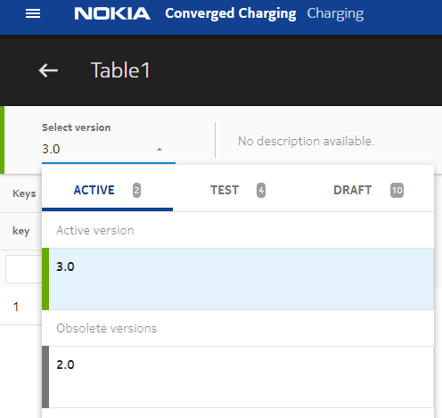
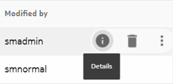
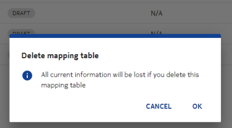
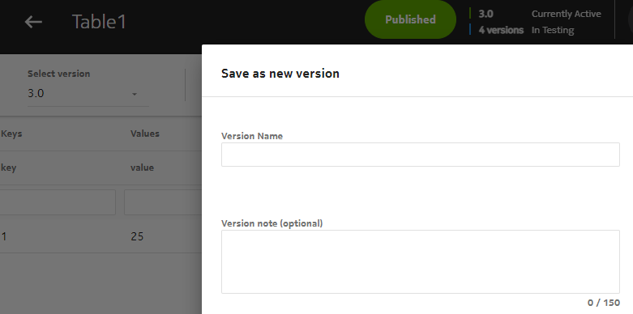
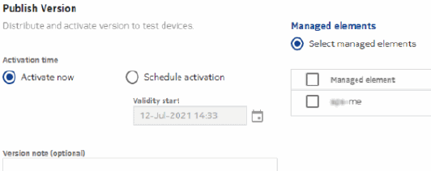
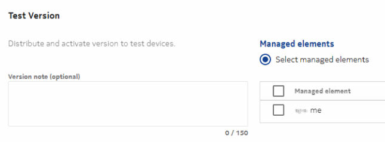
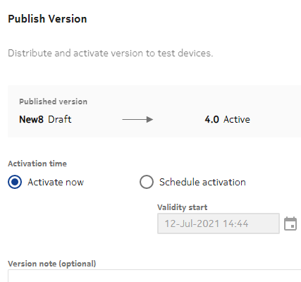
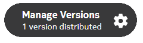
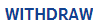
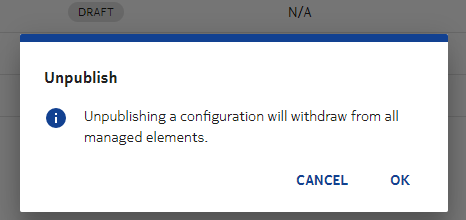

The delta versioning scheme is applicable only on SM GUI. It contains the delta from one user while work is in progress. Operators can start modifying a mapping table using one version and apply to another (based on conflict management). NCC automatically resolves the conflicts between different versions.
Limitations
- The enhanced versioning scheme allows versioning of regular maps. Hence, there is no need for reference-based maps. However, the reference-based maps are still supported so that operators can update the rules in a phased manner.
- You can provision new versions of the regular maps and switchover is not disruptive.
- To update a regular map, operators can clone the latest active version to a new draft version, update its entries and publish the draft version.
- If there is a mapping table that existed prior to upgrade and was not published, it will be renamed. To publish it with new versioning scheme, it must be created again and then published.
Configuration
Log into new GUI, navigate to Charging → ☰ →
Catalog Assets → Mapping Tables.
To define a new mapping table, click TABLES, and then  to add the basic details and profile configuration as described in the given
table:
to add the basic details and profile configuration as described in the given
table:
|
Parameter |
Description |
Options |
Mandatory/Optional |
|---|---|---|---|
| Name | This parameter indicates a unique name of the map. | String | Mandatory |
| Description | This parameter describes the mapping table. | String | Optional |
| Version Name |
This parameter allows you to create multiple draft version mapping tables with the same name and different versions. The maximum number of characters allowed in this attribute is 50. The ID field for versioned map includes a version-suffix consisting of a field separator character || and version as an user input. For example, map having id test||v1, which indicates the map name is test and version is v1. The draft versions are tracked by name. When published to ME, the draft changes are merged into the latest active version, and a new major version is created. |
String and read-only after create | Mandatory |
| Key Columns | |||
| Column name |
This parameter indicates the name of the first Key column. This is the header row, which indicates meaning to each field. The first column in the example table ComplexMappingTable example defines the key for the row. You can have up to 10 keys. |
String | Mandatory |
| Type | This parameter indicates the type of the Key column. | String | Mandatory |
| Value Columns | |||
| Column name |
This parameter indicates the name of the first Value column. This is the header row which indicates your meaning to each Value field in the row. In the example table ComplexMappingTable example, each row must consist of exactly m values, where m can be between 1 and M, each value can contain up to 1024 characters, with a maximum of 1 MB for an entire row of values. |
String | Mandatory |
| Type | This parameter indicates the type of the Value column. | String | Mandatory |
| Click +ROW to add a new row. | |||
| Click IMPORT to import mapping table from a file. | |||
| Insert or update | If the imported .CSV file consists of new rows, then they are
appended to the existing rows in the mapping table. If the rows in the imported .CSV file already exist in the mapping table, and their value is different, then the value of the existing mapping table rows are updated to the corresponding row value in the .CSV file. |
checkbox | Optional |
| Delete rows with matching key | The mapping table rows that match with the rows in the imported .CSV file (that is, rows in the .CSV file already exist in the mapping table, and their key is same) are deleted from the mapping table. | checkbox | Optional |
| Replace all data | Mapping table data is replaced with the data in the imported .CSV file. | checkbox | Optional |
| IMPORT | Select one of the import actions, and click the BROWSE button to select the .CSV file. Click IMPORT to import the selected files. | Optional | |
| Parameter | Description | Value type | Mandatory/Optional |
|---|---|---|---|
| Publish type | Use this field for conflict check during publishing. If there are
conflicts, a list of conflicts is displayed and user can select a
disposition on each of them to resolve. The supported values are as
follows:
|
Enum | Mandatory |
| Publish To | Operators can publish to All subscribers or Test devices. | Enum | Mandatory |
| Validity Start | This field appears only if Activation Time = Schedule Activation. The new version of the entity becomes active at the selected date-time. |
Date-time | Optional |
| Activation Time | The supported values are as follows:
|
Enum | Mandatory |
| Time zone for publish |
This field appears only if Activation Time = Schedule Activation.
|
Radio button | Mandatory |
NCC allows you to create references between the mapping tables. To create references,
click REFERENCES in the Mapping Tables
overview screen, and then click .
 Note:
Note:|
(Key_1) |
(Key_2) ... |
(Value 0) |
(Value 1) |
(Value 2) ... |
|---|---|---|---|---|
| <KeyName> | <KeyName> | <value> | <value> | <value> |
| <KeyName> | <KeyName> | <value> | <value> | <value> |
Note:-
Comma(,) is allowed in only keys of map. To support comma character in the keys, the SM server uses backslash (\) as a special character. Therefore, backslash character in key values should not be used as it can lead to inconsistent behavior. If there is a coma based key value. For example, "key1,key2", SM server stores it as key1\\,key2 and GUI displays it as key1,key2.
-
For the supported string, long, and double value types, the value(s) must be able to parse the value and type as required in the following Oracle documentation:
- https://docs.oracle.com/javase/7/docs/api/java/lang/long.html
- https://docs.oracle.com/javase/7/docs/api/java/lang/double.html
Additional information
-
A map in the provisioned state cannot be updated or deleted.
-
Whenever a user provisions a complex map on an ME, the SM server sets its state on the SM GUI to IN_PROGRESS, which means the provisioning of all entries in that map is ongoing. In that state, all operations like delete, update, retry, or provision are not allowed. However, if for some reason, a record gets locked in the IN_PROGRESS, then the user can use the reset option (or REST API) present in distribution box of the SM GUI but the reset option should be only used when provisioning of that record is not ongoing. Otherwise, it can lead to data inconsistency.
If any ME goes offline permanently, then undistribution on that ME does not work and the record gets locked in the DELETE_ATTEMPTED state. To remove such ME from distribution list of already provisioned record, the reset button is used, which removes the MEs whose state is DELETE_ATTEMPTED from the distribution list. However, this option does not make any correction in data inconsistency between an ME and SM server. The reset option should be used only when ME is not reachable and when provisioning operation for the same record is not ongoing.

APIs and SM options
| API | Description | Equivalent option in SM GUI |
|---|---|---|
| Create API | Creates a mapping table definition. | Navigate to Charging → ☰ → Mapping tables
and click |
| Update API | Updates a given mapping table definition. It can be applied only
to maps in DRAFT state.Note: |
Go to the record you want to edit, and click  , make the necessary changes and save
the record. , make the necessary changes and save
the record. |
| List versions API | Lists all the versions of a given mapping table. |  |
| Read API | Reads a version of a given mapping table. | Hover over the record that you want to read, and click the Details icon |
| Delete API | Deletes a given DRAFT version of a mapping table.Note: |
Hover over the record that you want to delete, and click  |
| Delete Versions API | Deletes all the DRAFT and WITHDRWAN versions of a mapping table. Note that this operation fails even if there is atleast one published version. |  |
| Clone API | Clones a mapping table to a new draft version. The resulting
mapping table is cloned with the same entities as in the selected
record to clone with a name specified in the API. Note: |
 |
| Provision API | Distributes or undistributes the entries of a mapping table to or
from MEs provided in the request. The mapping table and its entries
are merged into the latest ACTIVE version, and a new ACTIVE version
is created. If the start time is not provided in the request, then
it is set to current time.Note: |
 |
| Test-Provision API | Distributes the entries of mapping table in TEST_ACTIVE state. |  |
| Publish API | Publishes a mapping table to all the MEs connected to the SM. It
is similar to Provision API except that the user cannot choose the
list of MEs. Operators can also schedule a version to be published in future. |
 |
| Withdraw API | Withdraws a mapping table from all MEs that it was published to. | Go to the record that you want to withdraw from MEs, click  and then  |
| Unpublish API | Withdraws all versions of a mapping table from all MEs they were published to. |  |
| Test-Publish API | Publishes a mapping table to all MEs connected to the SM in TEST_ACTIVE state. | |
| Rollback API | Rolls back the changes done by a given draft from the latest active version and creates a new active version. If the latest active version has a future start time, then start time of the new version is set to <latest start time>+1 millisecond. Otherwise, the start time is set to the current time. | See Rollback operation (reverse merge) |
Merge operation
When operators publish draft version using one of these APIs: Provision, Test-Provision, Publish, Test-Publish, the changes made in draft version are merged into the latest active version. The result of merge is published as a new version. The latest active version is the version that is in ACTIVE or SCHEDULED state and has the highest startTime. If there are no active versions while publishing the changes, the draft gets published as it is, thus creating a new sequential version. In this case, merge is not done.
When multiple users work on the same mapping table, it leads to conflicts when they make changes to same entries. NCC resolves such conflicts automatically. Following is the default behavior of conflict resolution for merge operation for the entries created, updated, or deleted by draft:
- Created: If the same entry exists in the latest version, it means that it has been created by a subsequent version. In this case, the new value gets updated and change information is added to the record history in the new version. If the entry is different, then it leads to merge conflict. See Conflict resolution for more details.
- Updated: If an entry exists in the draft version, but does not exist in new version, then it leads to merge conflict and user can decide which entry to keep.
- Deleted: If the draft history value is same as current value, then it gets deleted. Otherwise, it leads to conflict and user can decide whether to keep the record with current value or confirm deletion.
Conflict resolution
The user can request for a conflict check for the mapping table using GUI during publishing. If there are conflicts, a list of conflicts displays on the GUI and user can select a disposition on each of them to resolve.
When publishing, the user has the following options:
- Normal: The normal mode uses conflict resolution, in which any detected conflicts get presented on the GUI, and the user must provide a disposition for each.
- Ignore conflicts: For the Ignore conflicts mode, the SM chooses a disposition for any conflicts and does not prompt the user to resolve them.
Publish operation - interaction between versioning schemes active/test modes
You can publish a mapping table in 'test mode', in which case it is only used for calls involving a device which has the 'testDevice' option set. The startTime field in the mapping table is also considered. You can set startTime = current time to make the table active immediately.
When you publish a draft in test-mode, it is merged into the latest active version, and published as the next minor version.Multiple drafts can be published in test-mode simultaneously. If you do this, however, you need to take an extra step to disambiguate which table to use for test devices. This can be done by adding custom data to the device indicating which table to use.
The custom data tag is 'testMappingTables' and the value is a list, with items separated by | character.
Each item is formatted as <mapname>=<version>, for example, mymap=1.2 to indicate that, in test mode, mymap version 1.2 is to be used.
- Two different users create their own draft versions: map1p1 and map1p2, based on clone of 1.0 active version.
- The map1p1 publishes 1.1 test, then map1p2 publishes 1.2 test.
- The map1p1 publishes to 2.0 active.
- Another user creates a draft map1p3 based on 2.0.
- The map1p2 publishes to 3.0 active which contains p1 and p2 changes, but not p3.
- The map1p3 publishes to testing as 3.1. It is merged into active version so that published version contains all three projects though it was created based on 2.0.
- The map1p3 publishes to 4.0 active, which contains all three projects.
Rollback operation (reverse merge)
Operators can rollback a given draft from latest active version using the Rollback API. The changes that were made by the draft are backed out from the latest version, creating a new sequential version.
Following is the default behavior of conflict resolution for rollback operation for the entries created, updated, or deleted by draft:
- Created: If the value in entry for latest version is same as in the draft, the entry gets deleted. If the value is different, it means that it has been updated by a subsequent version. In this case, the entry is kept.
- Updated: If the value in entry for latest version is same as in the draft, revert the value back. If the value is different, it means it was updated by a subsequent version. In this case, the value is preserved per the latest version.
- Deleted: If an entry exists in the latest version, no action is taken. If an entry does not exist, it is recreated with its original value.